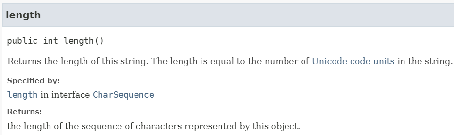

IPOO - Cap. 5 Comportamento Mais Sofisticado
Aula 5.1 - Teórica
DAC - ICET - Universidade Federal de Lavras
22/10/2024
Os tópicos abaixo te lembram alguma coisa? :)
- Praticar enquanto estuda.
- Ler o capítulo do livro.
- Anotar conceitos e dúvidas.

Principais Conceitos do Capítulo
- Encapsulamento
- Atributos e métodos estáticos
- Constantes
- Uso de classes de biblioteca
- Documentação de classes
Construções Java do capítulo
String,Random,static,final, autoboxing, classes empacotadoras.

O conceito de encapsulamento é fundamental na Programação Orientada a Objetos.
- E será apresentado no final do capítulo.
- Não deixe de estudar esse conteúdo!!!
No capítulo anterior conhecemos a classe ArrayList da biblioteca de classes do Java.
- Com ela, ficou mais fácil fazer programas para guardar uma quantidade qualquer de objetos.
- O que sem ela seria bem mais complicado.
Mas ela é apenas um exemplo de classe da biblioteca.
- Existem muitas que serão muito úteis em nossos softwares.
- E outras que, possivelmente, nunca usaremos.
Um bom programador Java precisa conseguir trabalhar com as classes da biblioteca.
- E saber quando utilizar cada uma.
- De forma a tornar a implementação de um programa mais fácil.
Muitas classes da biblioteca têm certas características comuns entre si.
- Especialmente as coleções, são classes que compartilham muitos atributos.
- E, usando a abstração, podemos tratar de classes de coleções de uma maneira mais geral.
Neste capítulo, vamos trabalhar com um sistema de Suporte Técnico.
- Começaremos com uma versão rudimentar.
- E ela será melhorado, incrementalmente, utilizando diferentes classes da biblioteca Java.
Documentação das classes de biblioteca
A biblioteca de classes do Java tem centenas de classes, com muitas opções de métodos.
- Será que um bom programador precisa conhecer todas elas de cor?
Na verdade, um bom programador deveria:
- Conhecer pelo nome as classes mais importantes e seus métodos (
ArrayListé uma delas). - Saber como encontrar informações das demais classes (tais como métodos e parâmetros).
O livro da disciplina recomenda que um programador conheça a documentação do Java para essas classes.
- A documentação é formada por páginas HTML bem detalhadas sobre todas as classes da biblioteca.
- Mas para quem não é fluente em inglês, isso pode gerar uma barreira inicial.
- Portanto, uma sugestão é usar também outras fontes para saber como usar as classes (como buscas no Google ou o ChatGPT).
De toda forma, à medida que você fique mais experiente, saber usar a documentação pode ser muito útil.
- Essa é uma das coisas que separam o programador juninho do bom programador.
Um ponto importante sobre o uso da classe ArrayList é que nós já a utilizamos sem nunca termos visto o código da classe.
- Nós não conferimos como ela foi implementada.
- E isso não foi necessário para utilizarmos suas funcionalidades.
Tudo o que precisamos saber é:
- O nome da classe.
- As assinaturas dos seus métodos (nomes, parâmetros e tipos de retorno).
- E o que exatamente esses métodos fazem.
A mesma coisa acontece em projetos de software grandes de uma empresa.
- Geralmente, várias pessoas trabalham em diferentes partes do sistema.
- Cada programador deveria se concentrar em sua parte, sem ter que entender detalhes das outras partes.
- Como discutimos ao falar sobre abstração e modularização.
Na verdade, cada programador deveria:
- Conseguir usar as classes das outras equipes como se elas fossem classes de biblioteca.
- Sabendo o que elas fazem, mas sem precisar saber como elas funcionam internamente.
Mas, para isso funcionar, cada membro de equipe deveria documentar sua classe assim como é feito para as classes da biblioteca
- Permitindo que outros programadores usem a classe sem precisar ler o código.
- Veremos como fazer isso na próxima aula.
O sistema de suporte técnico
A ideia do sistema de Suporte Técnico é que ele seja um chat de atendimento aos clientes.
- de uma empresa fictícia, chamada DesonestosSistemas.
Antigamente a empresa tinha funcionários que faziam atendimento por telefone.
- Mas ela passou por problemas financeiros e demitiu a equipe.
- E não tem dinheiro para criar um chatbot de verdade.
- E agora ela quer criar um sistema de suporte para dar a impressão que ela atende os clientes.
- A ideia é que o sistema imite o atendimento que uma pessoa faria ao telefone.
Vamos começar com uma versão bem rudimentar do sistema, disponível no projeto suporte-tecnico1.
- A ideia é que, ao longo da aula, possamos melhorar o sistema.
- E, ao longo do processo, vamos aprender diversos conceitos.
Exercício
Experimente a versão rudimentar do sistema de suporte técnico.
Crie um objeto da classe SistemaDeSuporte e chame o método iniciar. Experimente conversar com o sistema pelo terminal e repare como é atendido.
Exercício
Para conhecermos melhor o projeto, crie um objeto da classe LeitorDeEntrada e experimente seu(s) método(s).
Faça o mesmo com um objeto da classe Respondedor.
Exercício
Agora leia o código da classe SistemaDeSuporte e tente entender como ela funciona.
Você deve ter notado que o sistema é realmente muito rudimentar.
- A classe
LeitorDeEntradabasicamente retorna uma string digitada pelo usuário no terminal. - A classe
Respondedortem um método que sempre retorna a mesma resposta. - Já a classe
SistemaDeSuportetem um objeto de cada uma das duas classes anteriores.- E um loop
whileque, repetidamente, obtém um texto do usuário e exibe uma resposta. - Isso é repetido até que o usuário digite qualquer string que comece com
tchau.
- E um loop
Lendo documentação de classes
Experimente usar o sistema de suporte técnico e digitar "Tchau" ou " tchau" (com espaço) para sair.
- O que acontece?
- Para o usuário isso é muito chato, certo?
- Mas nós podemos usar a documentação da classe String para melhorar isso.
A classe String é uma das classes da biblioteca padrão do Java.
- Nós podemos acessar a documentação da classe, no BlueJ, no menu
Ajuda→Biblioteca de classes do Java. - Será aberta a documentação online do Java no seu navegador web.
- Na parte superior direita há uma caixa de busca.
- Digite string e escolha primeira opção (
java.lang.String).
Exercício
Abra a documentação de alguma outra classe do Java e compare a estrutura da documentação das duas classes. O que as páginas têm em comum?
Exercício
Procure pelo método startsWith na documentação da classe String. Veja que o método é sobrecarregado, há duas versões.
Escreva com suas palavras o que as duas versões fazem e a diferença entre eles.
Exercício
Há algum método na classe String que retorna quantos caracteres ela tem? Como o método se chama e quais são seus parâmetros?
Exercício
Procure se existe algum método na classe String que verifica se uma string termina com um dado sufixo. Se existir, como o método se chama, e quais são seus parâmetros e tipo de retorno?
Interface vs. Implementação
Você deve ter notado que a documentação tem diferentes tipos de informação:
- o nome da classe;
- uma descrição geral do objetivo da classe;
- uma lista dos construtores e métodos da classe;
- os parâmetros e tipos de retorno de cada construtor e cada método;
- e uma descrição do objetivo de cada construtor e cada método.
Todas essas informações formam o que chamamos de interface de uma classe.
- Repare que que a interface não mostra o código que implementa a classe.
- Se uma classe é bem descrita (ou seja, sua interface é bem escrita),
- um programador não precisa ver o código da classe para conseguir utilizá-la.
- A interface já tem toda a informação que ele precisa.
- (olha a abstração aí de novo!)
O código que não vemos, que é o que faz a classe funcionar, é chamado de implementação da classe.
- Geralmente um programador trabalha na implementação de uma classe de cada vez,
- e, para isso, usa várias outras classes através de suas interfaces.
Essa diferenciação entre interface e implementação é um conceito muito importante.
- E vamos ver isso repetidamente nessa disciplina (e em disciplinas avançadas de POO).
Nota
A palavra interface tem diferentes significados em POO. Pode se referir a parte pública visível de uma classe (que é o que acabamos de aprender). Mas pode também se referir a interface gráfica de usuário ou a um tipo especial de classe que você conhecerá se puxar PPOO como eletiva :)
Nós também podemos falar de interface de um método específico.
- Veja, por exemplo, a documentação do método
lengthda classeString.

A interface de um método consiste em sua assinatura e um comentário. E a assinatura de um método contém:
- Um modificador de acesso (
public, nesse caso). - O tipo de retorno do método (
int, nesse caso). - O nome do método.
- Uma lista de parâmetros (vazia, nesse caso).
Repare que a interface do método tem tudo que precisamos saber para conseguirmos usá-lo.
Conceito
A interface de uma classe descreve o que a classe faz e como ela pode ser usada sem mostrar a implementação.
Conceito
O código-fonte completo que define uma classe é chamado de implementação da classe.
Usando métodos de classes da biblioteca
Em nosso sistema de suporte, já vimos que o sistema não aceita que o usuário digite "Tchau" ou " tchau".
- Vamos melhorar isso de forma que todas essas variações sejam reconhecidas como
"tchau".
Exercício
Encontre o método trim na documentação da classe String. Escreva com suas palavras o que ele faz, e como ele poderia ser chamado usando uma variável String chamada texto.
Um importante detalhe sobre objetos String em Java, é que eles são imutáveis.
- Isso significa que esses objetos não podem ser alterados depois de criados.
- Repare que o método
trim, por exemplo, retorna uma nova String.- Ele não modifica a String original.

É um erro comum em Java, tentar alterar uma String usando chamadas como:
texto.toUpperCase();
Essa chamada não provoca nenhum erro, mas também não causa nenhum efeito. Isso porque o método retorna uma nova String, ele não altera a original.
Portanto, se queremos alterar a variável texto, precisamos descartar o objeto String original, atribuindo à variável texto a nova String gerada:
texto = texto.toUpperCase();
Pelo que você leu sobre o método trim na documentação, como podemos usá-lo no sistema de suporte?
- Você deve ter visto que podemos usá-lo para remover espaços no início e no final da string.
Você acha que haveria diferença entre escrever essas duas linhas de código:
ou escrever assim?
O efeito é exatamente o mesmo.
- Você pode escolher a forma que acha mais fácil de entender.
- Veja que na segunda opção, a ordem de execução é como se existissem os parênteses como mostrado abaixo.
Conceito
Um objeto é chamado imutável se seu conteúdo ou estado não pode ser alterado depois que ele foi criado. Strings são exemplos de objetos imutáveis.
Exercício (entrega)
Implemente a alteração na classe SistemaDeSuporte usando o método trim da classe String. Teste a alteração digitando espaço antes da palavra tchau.
Exercício (entrega)
O exercício anterior ainda não resolveu o problema do usuário digitar "Tchau" com letra maiúscula.
Veja na documentação da classe String como funciona o método toLowerCase e o utilize de forma que o programa saia independente do usuário digitar tchau com letras maiúsculas ou minúsculas.
Exercício (entrega)
Encontre o método equals na documentação da classe String. Utilize o método equals em vez do método startsWith na implementação da classe SuporteTecnico
Lembre-se que, como já foi dito em aulas práticas anteriores, não podemos comparar objetos String em Java utilizando o operador ==.
- Usando o operador estamos verificando se é o mesmo objeto, e não se os dois objetos têm o mesmo conteúdo.
- Para comparar se dois objetos String têm o mesmo conteúdo, devemos utilizar o método
equals.
Adicionando comportamento aleatório
No início da disciplina, nós utilizamos um objeto da classe Random no exercício da Nave para acrescentar aleatoriedade em nosso jogo.
- Nós podemos agora utilizar a mesma classe para mudar o comportamento do
Respondedordo nosso sistema de suporte. - A ideia é que o sistema exiba respostas aleatórias, em vez de sempre responder a mesma coisa.
Nós podemos fazer isso, alterando a classe Respondedor seguindo os passos abaixo:
- declarando um atributo do tipo
Randompara guardar um gerador de números aleatórios; - declarando um atributo do tipo
ArrayListpara guardar nossas possíveis respostas; - criando os objetos
RandomeArrayListno construtor da classeRespondedor; - preenchendo a lista com algumas frases de resposta;
- selecionando e retornando uma frase aleatória quando o método
gerarRespostaé chamado.
Exercício (entrega)
Melhore a classe Respondedor de forma que ela gere respostas aleatórias como descrito no slide anterior.
Veja que, para gerar respostas aleatórias, basta sortearmos uma posição do ArrayList e usarmos essa posição para obter uma mensagem. Podemos sortear uma posição usando o método nextInt da classe Random, e o método size da classe ArrayList.
Dicas:
- Veja no próximo slide alguns exemplos de frase de resposta (mas não precisam ser exatamente essas, use sua criatividade!).
- Reveja o exercício da Nave para se lembrar como usar a classe
Random. - Leia a seção 5.4 do livro da disciplina.
Exemplos de frases de resposta do sistema de suporte técnico:
"Isso parece estranho. Você poderia descrever com mais detalhes?"
"Nenhum outro cliente reclamou disso antes. Qual é a configuração do seu sistema?"
"Poderia me dar mais informações sobre o problema?"
"Isso é abordado no manual. Você já leu o manual?"
"Sua descrição é um pouco ruim. Você tem um especialista com você que poderia descrever isso melhor?"
"Isso não é um bug, é uma funcionalidade!"
"Você poderia detalhar melhor isso?"
"Você já tentou executar o aplicativo no seu telefone?"
"Já verifiquei no StatckOverflow e ChatGPT e nem eles sabem como responder :("Melhorando o sistema de suporte
Nosso sistema ficou mais dinâmico, mas ainda é muito ruim, pois as respostas são independentes do que o usuário escreve.
- Nós podemos melhorar um pouco isso, fazendo algo pelo menos próximo do que o usuário perguntou.
- O livro apresenta uma solução usando a classe
HashMapjá aqui.- Mas vamos tratar essa classe na próxima aula teórica.
- Então vamos implementar aqui primeiro uma solução com blocos
ifeelsepara ter um resultado similar.
A ideia é identificar alguma palavra-chave na pergunta feita pelo usuário.
- e fornecer uma resposta que tenha algo a ver com essa palavra-chave.
Por exemplo, suponha que na pergunta do usuário apareça a palavra "lento".
- A resposta poderia ser então algo como:
Já se na pergunta do usuário aparecer a palava "bug", a resposta poderia ser:
Como podemos implementar isso?
Atenção:
- O próximo exercício pede para alterar o método
gerarRespostada classeRespondedor. - Mas para que o professor consiga corrigir seu exercício anterior (de respostas aleatórias) você não pode apagar o código que tinha feito antes.
- Portanto, ao fazer o próximo exercício deixe o código anterior comentado em vez de apagá-lo.
Exercício (entrega)
Vamos implementar a ideia discutida nos slides anteriores. Neste exercício, faça o seguinte:
- Altere o método
gerarRespostada classeRespondedorpara que ele receba por parâmetro a pergunta feita pelo usuário.- Você precisará, claro, alterar a chamada do método na classe
SistemaDeSuportepara passar a entrada do usuário.
- Você precisará, claro, alterar a chamada do método na classe
- No método
gerarResposta, faça uma sequência deif/else ifpara verificar se as palavras-chave existem na pergunta do usuário.- Para isso, você pode usar o método
containsda classe String. - E no bloco de cada
if, retornar um texto correspondente àquela palavra-chave (veja sugestões no próximo slide). - Exemplo:
- Para isso, você pode usar o método
| Palavra-chave | Sugestão de resposta |
|---|---|
| “travou” | “Bem, nunca trava em nosso sistema. Deve ter algo a ver com o seu sistema. Conte mais sobre sua configuração.” |
| “travando” | “Bem, nunca trava em nosso sistema. Deve ter algo a ver com o seu sistema. Conte mais sobre sua configuração.” |
| “lento” | “Acredito que isso tem a ver com o seu hardware. Atualizar seu processador deve resolver todos os problemas de desempenho. Você tem algum problema com nosso software?” |
| “desempenho” | “O desempenho foi bastante adequado em todos os nossos testes. Você está executando outros processos em segundo plano?” |
| “bug” | “Bem, você sabe, todo software tem alguns bugs. Mas nossos engenheiros de software estão trabalhando muito para corrigi-los. Você pode descrever o problema com mais detalhes?” |
| “erro” | “Bem, você sabe, todo software tem alguns bugs. Mas nossos engenheiros de software estão trabalhando muito para corrigi-los. Você pode descrever o problema com mais detalhes?” |
| “windows” | “Este é um bug conhecido relacionado ao sistema operacional Windows. Por favor, informe à Microsoft. Não há nada que possamos fazer a respeito.” |
| “mac” | “Este é um bug conhecido relacionado ao sistema operacional Mac. Por favor, informe à Apple. Não há nada que possamos fazer a respeito.” |
| “caro” | “O custo de nosso produto é bastante competitivo. Você deu uma olhada e realmente comparou nossos recursos?” |
| “instalação” | “A instalação é realmente bastante simples. Temos muitos assistentes que fazem todo o trabalho para você. Você leu as instruções de instalação?” |
| “memória” | “Se você ler atentamente os requisitos do sistema, verá que os requisitos de memória especificados são de 6 gigabytes. Você realmente deve atualizar sua memória. Mais alguma coisa que você gostaria de saber?” |
| “linux” | “Levamos o suporte ao Linux muito a sério. Mas há alguns problemas. A maioria está relacionada a versões incompatíveis do glibc. Você pode ser um pouco mais preciso?” |
| “bluej” | “Ah, o BlueJ, sim. Tentamos comprá-los há muito tempo, mas eles simplesmente não vendem… São pessoas teimosas. Não há nada que possamos fazer a respeito, desculpe.” |
Autoboxing e classes empacotadoras
Nós vimos que um ArrayList consegue guardar qualquer tipo de objeto.
- Mas como
intnão é um objeto, não é possível usar umArrayListpara guardar uma lista de números inteiros?
Isso é possível através das classes empacotadoras (wrapper classes).
- Cada tipo primitivo em Java tem uma classe empacotadora que representa o mesmo tipo,
- Mas que é um objeto de verdade.
- A classe empacotadora para
int, por exemplo, se chamaInteger.
Nós poderíamos criar explicitamente um objeto do tipo Integer:
E poderíamos então declarar um ArrayList<Integer> e guardar nele o objetoInt.
- Mas, na verdade, nós nunca fazemos isso, pois podemos guardar valores de tipo primitivo no
ArrayList! - Isso porque sempre que um valor de tipo primitivo é usado em um contexto que requer um tipo empacotador (wrapper),
- o compilador converte o valor automaticamente em um objeto empacotador correspondente.
- Essa funcionalidade se chama autoboxing (algo como, auto-empacotamento).
Portanto, na prática, podemos escrever código como mostrado abaixo:
Repare que estamos guardando o valor da variável nota, do tipo int, em um ArrayList<Integer>.
Seguindo a mesma ideia, o compilador realiza o unboxing quando obtemos um valor da coleção:
Veja portanto que, em termos práticos, a única coisa que precisamos lembrar é de declarar o ArrayList usando a classe empacotadora (como a Integer).
- Mas na hora de usar o
ArrayListpodemos tratar todos os dados como se fossem do tipoint.
Veja no Apêndice B do livro uma lista completa dos tipos primitivos e suas classes empacotadoras.
- Vale ressaltar também que o mesmo conceito é aplicado para as demais coleções, como a classe
HashMap.
Conceito
Autoboxing é realizado automaticamente quando um valor de tipo primitivo é usado em um contexto que requer um tipo empacotador (wrapper).
Encapsulamento
Público vs. Privado
Vocês já notaram que usamos a todo momento as palavras-chave public e private em nossos programas em Java, como mostrado no exemplo abaixo:
Chegou a hora de entendermos para que essas palavras-chaves servem.
Nós chamamos essas palavras-chave de modificadores de acesso.
- elas definem a visibilidade de atributos, construtores e métodos.
Se um método, por exemplo, é público:
- Ele pode ser chamado de dentro da mesma classe e também a partir de outra classe.
Já métodos privados, por outro lado,
- Só podem ser chamados de dentro da mesma classe onde foram declarados.
- Eles não são visíveis para as outras classes.
Como agora já conhecemos os conceitos de interface e implementação fica mais fácil entendermos o objetivo dessas palavras-chave.
Lembre-se que a interface de uma classe é o conjunto de detalhes que um programador que vai usar a classe precisa ver.
- Ela fornece informações sobre como usar a classe.
- E inclui assinaturas e comentários de construtores e métodos.
- Nós também dizemos que a interface é a parte pública da classe.
- Seu objetivo é definir o que a classe faz.
Já a implementação é a parte da classe que define precisamente como a classe funciona.
- Os corpos dos métodos, contendo comandos Java, e muitos atributos são parte da implementação.
- Nós também podemos dizer que ela é a parte privada da classe.
- Quem usa a classe não precisa conhecer a implementação.
- Inclusive, há boas razões para que o programador não possa fazer uso desse conhecimento (como veremos mais adiante).
Portanto, podemos dizer que:
- A palavra-chave
publicdeclara que um elemento de uma classe (atributo ou método) faz parte de sua interface.- Ou seja, é visível publicamente.
- Já a palavra-chave
privatedeclara que um elemento é parte da implementação.- Ou seja, está escondida de acesso externo.
Conceito
Modificadores de acesso definem a visibilidade de um atributo, construtor ou método. Elementos públicos são acessíveis de dentro da classe e a partir de outras classes; já elementos privados são acessíveis somente de dentro da mesma classe.
Encapsulamento
Em muitas linguagens OO, a implementação de uma classe (seus detalhes internos) é ocultada de outras classes.
Isso tem a ver com duas questões.
- Ao usar uma classe um programador não deveria precisar conhecer seus detalhes internos.
- Isso tem a ver com a modularização e abstração que já discutimos antes.
- Se fosse necessário saber os detalhes de todas as classes, seria impossível desenvolver grandes sistemas.
- Outra questão é que, ao usar uma classe, um programador não deveria ter permissão de conhecer seus detalhes internos.
- Apesar de também ter a ver com modularização, a ideia aqui é que a linguagem não deveria permitir o acesso à parte privada de uma classe a partir de comandos em outras classes.
- Isso garante que uma classe não dependa de como exatamente uma outra classe está implementada.
Esta última questão é muito importante para a manutenção de sistemas.
- Quando precisamos incluir novas funcionalidades ou corrigir bugs é muito comum precisarmos alterar ou aumentar uma classe.
- O ideal é que a alteração de uma classe não provoque alterações em outras classes.
- Isso tem a ver com o que chamamos de acoplamento.
- Se a alteração em uma classe não provoca alterações em outras classes, temos um baixo acoplamento.
- E isso é muito bom, porque torna o trabalho de manutenção muito mais fácil.
- Já que em vez de entender e alterar várias classes, o programador precisa trabalhar em apenas em uma.
Suponha, por exemplo, que a equipe que mantém a linguagem Java faça uma melhoria na implementação da classe ArrayList.
- O ideal é que essa melhoria não afete os nossos códigos que usam a classe
ArrayList. - Repare que isso só é possível porque nosso código não faz referência à implementação da classe
ArrayList.
Para ficar mais claro, quando uma classe A utiliza um objeto de uma classe B.
- Não é bem o programador que não pode conhecer a parte interna (implementação) da classe B.
- Na verdade é a classe A que não pode conhecer (ou seja, depender) dos detalhes internos da classe B.
- Repare que pode acontecer do mesmo programador implementar tanto a classe A quanto a classe B.
- Mas de toda forma, as classes ainda deveriam ter baixo acoplamento.
Esta questão de acoplamento é tão importante que vamos discuti-la, em detalhes, no Capítulo 7.
- Por enquanto, o mais importante é entender que a palavra-chave
privategarante o princípio da ocultação de informações- ao impedir que outras classes acessem a parte privada da classe.
- Isso garante o baixo acoplamento, tornando a aplicação mais modular e facilitando a manutenção.
Nós também podemos chamar o princípio da ocultação de informações de encapsulamento.
- Esse conceito é fundamental na Programação Orientada a Objetos.
- E talvez seja a única parte do livro que não gosto muito, pois acho que ele não dá a ênfase necessária a esse conceito.
O termo encapsulamento vem da palavra cápsula, que é definida no dicionário como:

A ideia é que a implementação da classe (seus detalhes internos) sejam encapsulados (protegidos).
- E a classe exponha apenas sua interface.
Um bom exemplo que ilustra o encapsulamento é um telefone fixo comum.
- Você usa o telefone através de sua interface (os botões) e não precisa saber como é o funcionamento interno.

A mesma analogia pode ser feita com um caixa eletrônico.
- Você usa as opções que aparecem pra você (interface) mas não precisa saber como isso funciona internamente.
- E você só tem acesso aos dados que a interface disponibiliza.
Métodos privados
Muitos dos métodos que vimos até agora eram públicos.
- Isso garante que eles podem ser chamados a partir de outras classes.
- Mas podemos também ter métodos privados.
- Como os métodos
imprimirBoasVindaseimprimirDespedidada classeSistemaDeSuporte.
- Como os métodos
Nós declaramos um método como público para fornecer operações para quem usa a classe.
- E declaramos como privado para dividir o código em trechos menores, facilitando o entendimento e a leitura.
- Veja que não faria sentido chamar o método
imprimirBoasVindasde fora da classeSistemaDeSuporte. - Mas o código do método
iniciarfica mais claro quando separamos sua tarefa em subtarefas.
- Veja que não faria sentido chamar o método
Métodos privados
Nós também usamos métodos privados quando um trecho de código é usado em mais de um lugar na classe.
- Pois, dessa forma, evitamos escrever o mesmo trecho de código mais de uma vez.
- E, em vez disso, chamamos o método privado em mais de um lugar.
Atributos privados!
A linguagem Java permite que atributos sejam declarados como privados ou públicos.
- Mas você deve ter notado que nos exemplos sempre declaramos os atributos como privados.
- Isso é fundamental para respeitar o conceito de encapsulamento.
Declarar atributos públicos quebra o princípio da ocultação das informações.
- Portanto, mesmo que a linguagem Java permita atributos públicos, isso é considerado um estilo ruim de programação.
- Há linguagens que nem permitem a existência de atributos públicos.
- Enquanto outras não implementam completamente o conceito de encapsulamento, o que viola a teoria de POO.
- Esse é o principal motivo para eu não adotar a linguagem Python na disciplina :)
Atributos privados!
Outro motivo para manter os atributos privados é permitir que a classe tenha um maior controle sobre o estado dos seus objetos.
- Se o atributo é encapsulado e só é acessível através de métodos de acesso (obter/get) e modificadores (definir/set),
- a classe pode garantir que o atributo nunca tenha um valor inválido ou inconsistente.
Para deixar o conceito mais claro, suponha que uma classe Circulo tenha um atributo chamado diametro.
- E, como o programador faltou às aulas de POO, ele definiu o atributo como público.
- Com isso, qualquer classe consegue acessar e alterar o valor do diâmetro de um círculo.
- Fazendo, por exemplo:
Atributos privados!
Mas repare que isso abre brecha para a seguinte situação:
O que aconteceria se, por algum erro, o método calcularNovoDiametro retornasse um valor negativo?
- O círculo acabaria ficando com um diâmetro negativo, mas isso não faz sentido.
E como isso poderia ser corrigido?
Atributos privados!
Além, é claro, de corrigir o método de cálculo, seria uma boa ideia colocar um if antes de alterar o diâmetro:
- Para garantir que o círculo nunca ficasse com valor negativo por algum outro erro.
Mas repare que podem existir diversos trechos de código no programa que alteram o valor do diâmetro.
- E seria necessário colocar essa verificação em todos esses lugares.
- Outro problema é que tudo isso está acontecendo sem o conhecimento da classe
Circulo.- Mas é ela quem deveria ser responsável por garantir que o estado dos seus objetos é sempre válido.
Atributos privados!
Vamos comparar com uma versão bem implementada da classe Circulo:
- ela teria o atributo
diametroprivado; - e um método modificador para alterar o diâmetro.
Repare que, com isso, o diâmetro só pode ser alterado através da chamada do método mudarDiametro.
- E agora fica mais fácil evitar o problema anterior.
- Pois basta colocarmos a verificação (
if) no métododefinirDiametro. - Não é necessário tratar todos os lugares que chamam o método
mudarDiametro.
Em resumo:
- Atributos deveriam ser sempre privados!
Conceito
Encapsulamento (ou ocultamento de informações) é um princípio que define que os detalhes internos da implementação de uma classe deveriam ser ocultados das outras classes. Isso permite uma melhor modularização de uma aplicação.
Entregas dessa Aula
Para ter presença nessa aula teórica ANP, demostrando que você estudou o conteúdo, você deve fazer a atividade abaixo.
Entregas no Campus Virtual
Responda a tarefa no Campus Virtual enviando o seu projeto suporte-tecnico1 com as alterações dos 5 exercícios solicitados ao longo dos slides.
Atenção: não se esqueça do aviso dado nos slides sobre o professor ter como corrigir a geração de reposta aleatória!